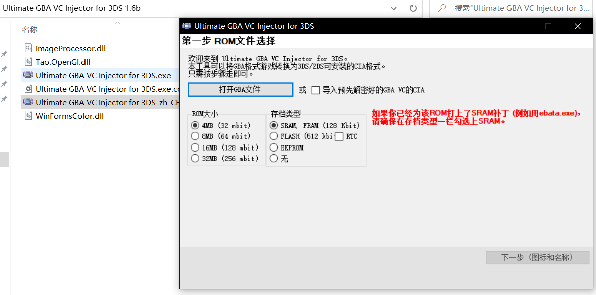
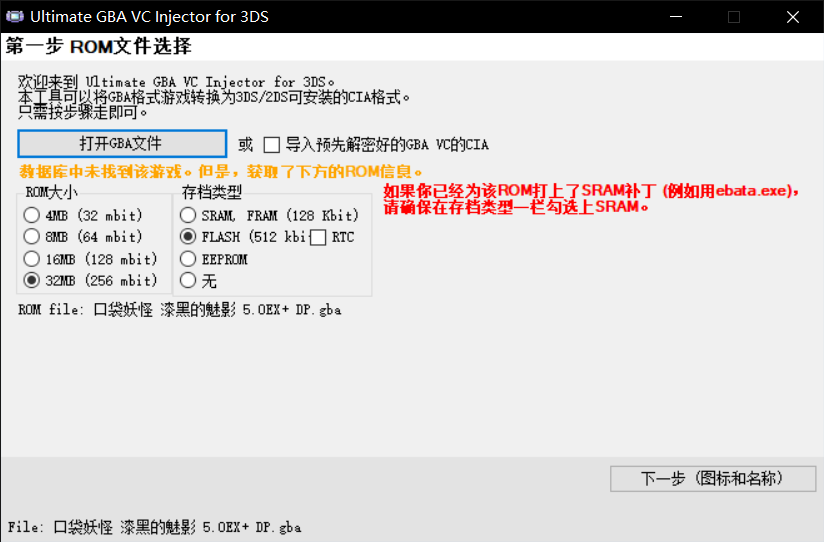
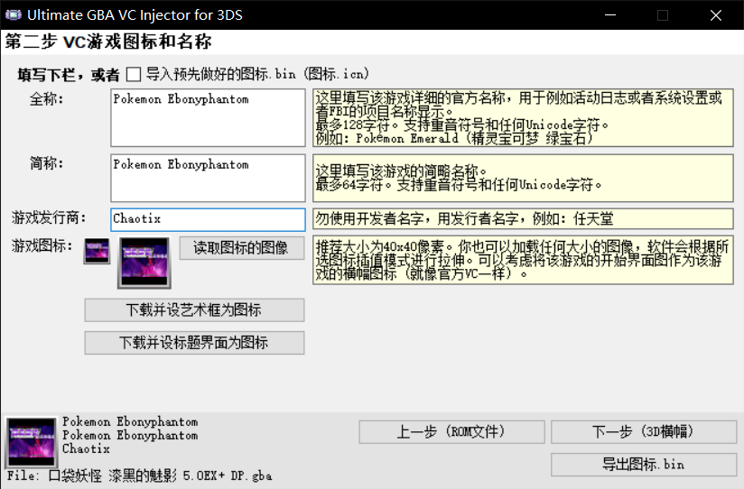
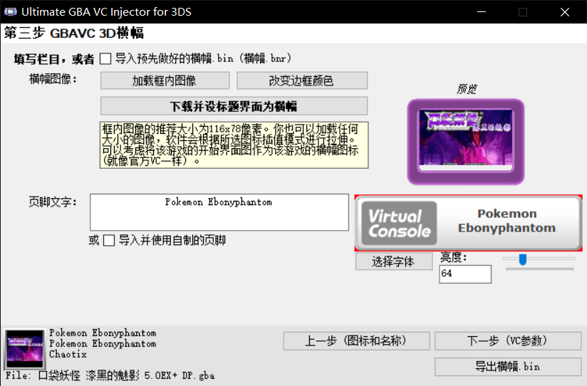
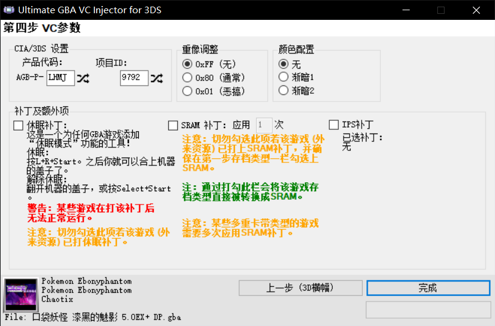
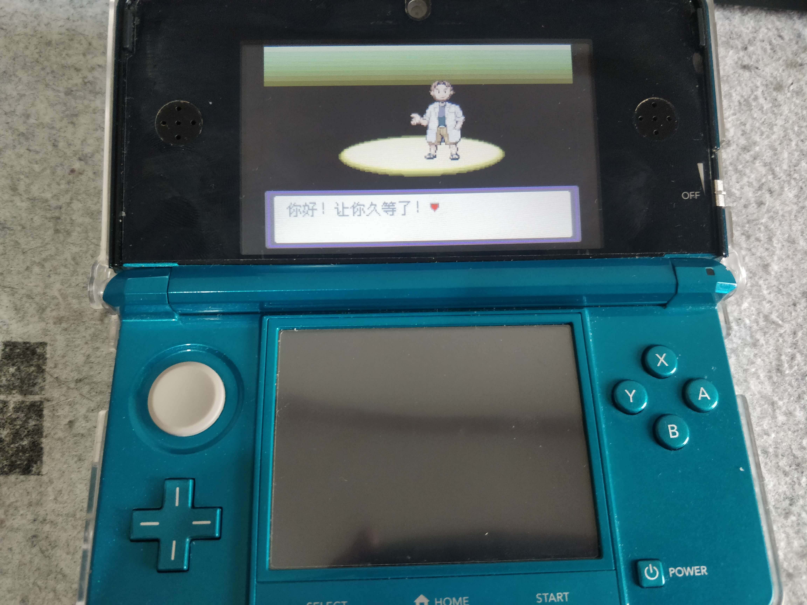

前情提要
为什么要水这么一篇文章
在把switch借给朋友玩的这段时间，我把目光投向了吃灰已久的3ds….
我想要在实机上游玩gba游戏，但是3ds上的模拟器又有各种各样的兼容性问题，达不到eshop里VC金银流畅的游玩体验；宣称能游玩GBA的DSTWO PLUS烧录卡早已停产，某宝/闲鱼的价格居高不下…经过一番摸索，我找到了可能是现今最好的解决方案。
准备工作
一台BOOT9STARP(B9S)破解的3ds
参考3ds破解手册或者一只火狐大佬整理的教程(推荐)
嫌麻烦的同学可以
交给热心摊主处理Ultimate GBA VC Injector for 3DS
汉化版下载链接
你想要在3ds上运行的GBA游戏ROM文件
这里以漆黑的魅影为例（很棒的GBA宝可梦改版，我一直想在实机上玩）
GBA 转CIA
打开软件并导入下载好的
.gba文件，ROM大小和存档类型会自动确认(汉化版ROM往往是数据库未找到该游戏，请确保选择的正确无误以免影响存档)

填写要转换的VC图标和名称(因为3ds字库的原因建议不要使用中文XD)，设置3D横幅(就是选中这个游戏时3ds上屏的画面)


设置VC参数并导出CIA文件(注意当转换多个
.cia文件时，确保每个文件的产品代码及项目ID都不一样)
在3ds上安装转换好的
.cia文件关于如何B9S如何安装cia文件这里不再赘述(实在懒得截图了)

大功告成~
备注事项
- 据说部分老款3ds对这种方式转换的
.cia支持不好，会出现黑屏情况(我的美版老小三反正测试是没问题啦) - 港版不支持港版不支持港版不支持
- 存档类型一定要设置正确